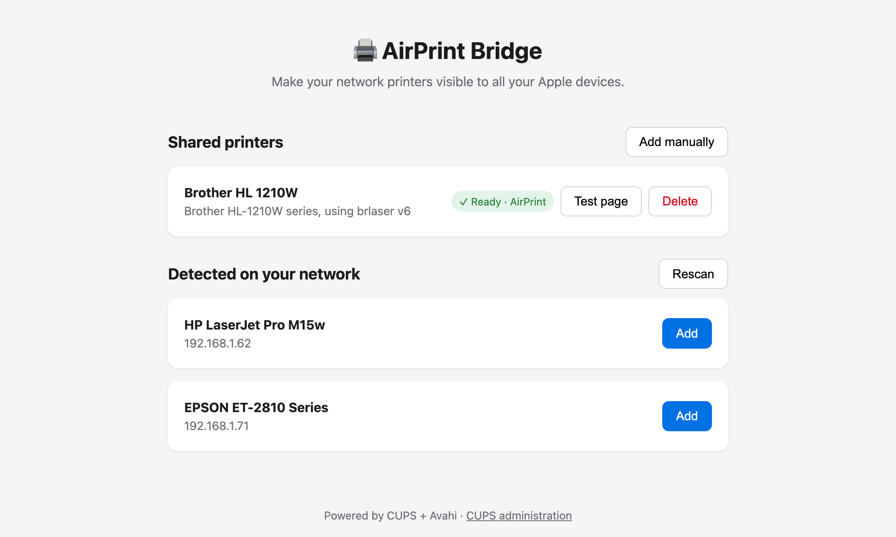

🖨️ AirPrint Bridge
Print from your iPhone, iPad or Mac to any network printer — even one that doesn't support AirPrint.

The problem
Apple devices only print over AirPrint. Plenty of perfectly good network printers — older lasers, budget models — don't speak it. The printer works, your iPhone just can't see it.
The classic fix is to set up CUPS on a Linux box by hand: find a driver, write config files, fight with mDNS. It works, but it's an afternoon of work.
What this does
AirPrint Bridge packs that whole setup into one Docker container with a web page on top. You open the page, your printers are already listed, you click Add. From then on the printer shows up in the print dialog of every Apple device on the network.
How it works
The container bundles CUPS (the printing system), Avahi (Bonjour/mDNS) and the OpenPrinting driver database (Gutenprint, HPLIP, brlaser, SpliX, foomatic…). When you open the page:
- Scan. An SNMP probe is broadcast on your subnets and Avahi listens for Bonjour announcements. Printers answer with their model and connection URI — this finds printers that predate Bonjour entirely.
- Driver match. The printer's IEEE 1284 device ID (an identifier printers embed exactly for this) is looked up in the driver database; make-and-model matching is the fallback. No match? Search manually or upload the manufacturer's PPD file.
- Publish. The printer becomes a CUPS queue, and Avahi announces it over mDNS. That announcement is AirPrint — there's no magic beyond it.
Quick start
# docker-compose.yml
services:
airprint:
image: ghcr.io/moifort/airprint:main
container_name: airprint
# Required: AirPrint relies on mDNS (multicast), which does not
# cross Docker's bridge network.
network_mode: host
restart: unless-stopped
environment:
UI_PORT: "8080"
volumes:
- /DATA/AppData/airprint/cups:/etc/cupsdocker compose up -dOpen http://<server-ip>:8080, wait a few seconds for the scan, click Add. Done.
Runs on any Docker host on your LAN — a NAS, a Raspberry Pi, a CasaOS box (amd64 and arm64 images). Setup details and troubleshooting in the README.